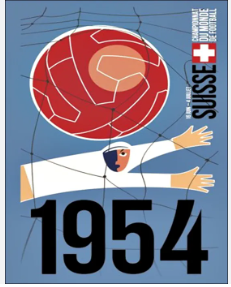

COPA DO MUNDO DE 1954
historia da copa do mundo de 1954
essa foi a quinta edição da Copa do Mundo FIFA de Futebol, que ocorreu de 16 de junho até 4 de julho. Em comemoração ao 50º aniversário da FIFA, o evento foi sediado na Suíça, onde encontra-se a sede da FIFA; o país foi oficialmente selecionado como anfitrião em julho de 1946. Dezesseis seleções nacionais foram qualificadas para participar desta edição do campeonato, sendo 11 delas europeias (Suíça, Hungria, Áustria, Inglaterra, Alemanha Ocidental, Iugoslávia, França, Itália, Tchecoslováquia, Bélgica e Escócia), 3 americanas (México, Brasil e Uruguai) e 2 asiáticas (Turquia e Coreia do Sul). A copa contou com grandes jogadores, como Fritz Walter, Max Morlock, Hans Schäfer e Helmut Rahn da Alemanha Ocidental, Ernst Ocwirk da Áustria, Julinho Botelho, Didi e Djalma Santos do Brasil, Roque Máspoli, Juan Schiaffino, José Santamaría e Obdulio Varela, capitão do Uruguai, Gyula Grosics, Nándor Hidegkuti, József Bozsik, Zoltán Czibor, Sándor Kocsis e Ferenc Puskás da Hungria, sendo este último considerado o melhor jogador da competição, um dos melhores da história do Real Madrid, e um dos melhores da história do futebol mundial. Em 1954, a Copa do Mundo voltou a ser sediada na Europa. A primeira Copa no continente após a Segunda Guerra Mundial foi sediada na Suíça, que pouco foi afetada pela guerra por sua postura neutra e tinha um país preparado para a competição. Fora 16 seleções qualificadas divididas em quatro grupos. Entre as novidades estiveram a Turquia, que eliminou a Espanha nas Eliminatórias, a Escócia e a Coreia do Sul. A Argentina foi uma das ausências, já que Brasil e Uruguai foram os representantes sul-americanos.

Brasil tenta secar as lágrimas
O Brasil viajou para a Suíça depois de eliminar Chile e Paraguai nas Eliminatórias. A seleção passou por uma completa reformulação depois do Maracanazo de 1950: Zezé Moreira assumiu no lugar de Flávio Costa e dos 11 titulares da decisão do Maracanã, nenhum foi convocado para a Copa seguinte. O reformulado time brasileiro via surgir alguns craques históricos: Castilho, Djalma Santos, Nilton Santos, Julinho Botelho e Didi. O selecionado brasileiro para a Copa de 54 era dos mais fortes, mas teve um pouco de azar em seu caminho. No grupo 1, o Brasil passou fácil pelo México (goleada por 5 a 0), mas teve dificuldade para avançar. Contra a Iugoslávia, empate em 1 a 1. O Brasil avançou em primeiro na chave. E para explicar um pouco melhor: a fase de grupos só teve mesmo dois jogos, já que os cabeças de chave não se enfrentaram (no caso desta chave eram a seleção brasileira e a França). Os iugoslavos acabaram avançando com vitória sobre a França. Só que na fase seguinte, as quartas de final, as duas seleções enfrentaram pedreiras. A Iugoslávia acabou eliminada pela Alemanha, enquanto o Brasil teve pela frente a Hungria, que havia enfiado 9 a 0 na Coreia do Sul e 8 a 3 na Alemanha. A Hungria era conhecida como "O Time de Ouro", moldado por Gusztáv Sebes, que aproveitou o esquema M-M de Martón Bukovi no MTK e montou uma seleção sem um atacante fixo, com uma espécie de falso 9. Campeã olímpica, a Hungria não perdia há quatro anos. Mesmo sem Ferenc Puskás, o Major Galopante, lesionado, os húngaros formavam uma seleção dos sonhos. Em menos de dez minutos, já estava 2 a 0 para os europeus. Djalma Santos descontou de pênalti ainda no primeiro tempo, mas Lantos também teve um pênalti favorável e converteu. Depois dos 25 minutos, o jogo virou uma batalha campal e até Nilton Santos acabou expulso. No fim, com dois a menos, o Brasil perdeu por 4 a 2.

Primeira fase
A Hungria, pelo Grupo 2, aplicou na 1ª fase duas goleadas históricas, uma sobre a fraca Coreia do Sul por 9-0 e a outra sobre nada mais, nada menos do que a Alemanha Ocidental, 8 a 3. Turquia e Alemanha Ocidental então tiveram que jogar o desempate pois terminaram empatados em pontos. A partida foi vencida pelos alemães com facilidade. O técnico Sepp Herberger colocou o time reserva em campo contra os húngaros, pois assim absorveria melhor uma mais que provável derrota e pouparia seus comandados. Pelo Grupo 1, do Brasil, ocorreu um episódio bastante curioso. Brasil e Iugoslávia venceram seus primeiros compromissos (Brasil 5 a 0 México e Iugoslávia 1 a 0 França) e o empate garantia ambos na fase seguinte. Acontece que os jogadores do Brasil não conheciam o tal regulamento e atacavam insistentemente a meta iugoslava, com os jogadores eslavos fazendo gestos aos brasileiros pelo empate que beneficiaria os dois. Ao final do jogo alguns brasileiros choravam e apenas posteriormente a situação foi esclarecida. Tanto brasileiros como iugoslavos se classificaram à fase seguinte. No grupo 3, Áustria e Uruguai classificaram-se sem problemas. A Celeste Olímpica ganhou da Tchecoslováquia por 2 a 0 e da Escócia por 7 a 0. Uma curiosidade é que, insatisfeito com as intromissões da comissão técnica no seu trabalho, o técnico da Escócia Andy Beattie pediu demissão logo após a derrota para a Áustria, sendo o único técnico a pedir demissão durante uma copa até hoje. A Áustria também passou fácil com 1 a 0 na Escócia e 5 a 0 na Tchecoslováquia. No Grupo D, o English Team tenta se refazer do desastre de 50, sua estreia em copas. Empata em um jogo espetacular com a Bélgica (4-4) e ganha da Suíça por 2 a 0. Suíça e Itália defrontaram-se duas vezes no grupo. Na primeira partida os helvéticos venceriam por 2 a 1 num jogo muito conturbado e de uma arbitragem bastante controversa do brasileiro Mário Vianna. As equipes se enfrentariam novamente, e no jogo desempate a Suíça vence por 4 a 1. Chega as Quartas de Final.
fase final
O Brasil foi a vítima magiar nas Quartas. Uma verdadeira batalha campal em Berna e a Hungria vence por 4 a 2. Áustria e Suíça fazem o jogo com maior número de gols da história dos mundiais: Áustria 7 x 5 Suíça. A Alemanha Ocidental vence a Iugoslávia por 2 a 0 e o Uruguai atropela a Inglaterra por 4 a 2. Numa das semifinais tivemos a Áustria encarando a equipe da República Federal da Alemanha, uma das três nações alemãs da época. O time da RFA se classificou batendo os alemães da região do Sarre, ocupado pela França, enquanto a Alemanha Oriental não se inscreveu para a Copa. Com a final em jogo, a equipe alemã bateu a austríaca por 6 a 1. Destaque para os irmãos Fritz e Ottmar Walter, que, com passes rápidos, levaram sempre perigo ao gol austríaco. Na outra semifinal, tivemos um dos mais interessantes jogos do torneio, onde a Hungria liderava sobre o Uruguai ao final do primeiro tempo por 1 a 0. Mas ao final dos noventa minutos o placar apontava 2 a 2, levando a partida a prorrogação. A igualdade foi quebrada por Sándor Kocsis, que marcaria dois gols no tempo extra e assim levando a Hungria a final, derrotando um time que jamais havia perdido um jogo de Copa do Mundo. O Uruguai sofreria sua segunda derrota ao ceder o terceiro lugar aos austríacos por 1 x 0.
grande final
O Estádio Wankdorf em Berna recebeu 60 mil pessoas que se espremeram para acompanhar a partida final entre Alemanha Ocidental e Hungria, uma repetição do jogo da primeira fase. Nesta fase, a Hungria venceu os reservas alemães por 8 a 3. O Time Dourado dos húngaros era o favorito, pois vinha de 32 partidas invicto, porém vinha de duas partidas duras. Começou a chover no dia do jogo - na Alemanha isso é chamado de "Fritz-Walter-Wetter" (tempo de Fritz Walter) pois dizia-se o capitão da equipe alemã Fritz Walter jogava seu melhor futebol na chuva, porque havia contraído malária quando jovem e por isso não atuava tão bem no calor. Adi Dassler, proprietário da Adidas e fornecedor de material esportivo para a seleção alemã, forneceu chuteiras com cravos intercambiáveis, que melhor se adaptariam ao campo molhado. Na final se viu Ferenc Puskás atuando mesmo não estando em sua melhor forma. Ainda assim ele colocou seu time à frente do placar em apenas 6 minutos de jogo, e com Zoltán Czibor fazendo outro tento dois minutos depois parecia que os favoritos realmente levariam o título. Porém, com um rápido gol de Max Morlock no décimo minuto, e Helmut Rahn empatando aos 19, a maré começou a virar. No segundo tempo a Hungria desperdiçou diversas chances. Mas, nervosos não conseguiram nada. Os alemães praticamente "cozinharam" o jogo a seu favor, e acabariam premiados. A meros seis minutos do final da partida, o popular narrador do rádio alemão Herbert Zimmermann fez sua mais memorável declaração ao dizer: "Rahn deveria chutar do meio da rua" (em alemão: "aus dem Hintergrund müsste Rahn schießen"), e assim foi. O segundo gol de Rahn, que chutou da meia-lua da área, após a zaga húngara afastar mal a bola, deu a liderança da partida aos alemães. Depois, Puskás ainda fez um gol impedido. Aos alemães foi entregue a Taça Jules Rimet e o título de vencedores da Copa do Mundo com a torcida cantando junto o hino nacional alemão. Na Alemanha, esta partida é conhecida como o Milagre de Berna. Um filme baseado na história foi lançado em 2003. Para os húngaros, a derrota foi um desastre, e o seu declínio no futebol teria início somente dois anos depois, com a Revolução Húngara. Os 11 gols marcados por Kocsis não apenas o garantiram a artilharia desta Copa, mas o tornou o recordista como artilheiro em uma Copa, superando Ademir de Menezes que havia marcado 9 tentos na copa anterior. A marca de Kocsis viria a ser quebrada na Copa seguinte por Just Fontaine e seus 13 gols.